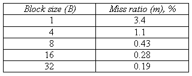
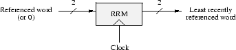

Problem 3.
A student has miswired the address lines going to the memory of an
unpipelined BETA. The wires in question carry a 30-bit word address to
the memory subsystem, and the hapless student has in fact reversed the
order of all 30 address bits. Much to his surprise, the machine
continues to work perfectly.
-
Explain why the miswiring doesn't affect the operation of the machine.
-
The student now replaces the memory in his miswired BETA with a
supposedly higher performance unit that contains both a fast fully
associative cache and the same memory as before. The reversed wiring still
exists between the BETA and this new unit. To his surprise, the new
unit does not significantly improve the performance of his machine. In
desperation, the student then fixes the reversal of his address lines
and the machine's performance improves tremendously. Explain why this
happens.
Problem 4.
For this problem, assume that you have a processor with a cache
connected to main memory via a bus. A successful cache access by the
processor (a hit) takes 1 cycle. After an unsuccessful cache access
(a miss), an entire cache block must be fetched from main memory over
the bus. The fetch is not initiated until the cycle following the
miss. A bus transaction consists of one cycle to send the address to
memory, four cycles of idle time for main-memory access, and then one
cycle to transfer each word in the block from main memory to the
cache. Assume that the processor continues execution only after the
last word of the block has arrived. In other words, if the block size
is B words (at 32 bits/word), a cache miss will cost 1 + 1 + 4 + B
cycles. The following table gives the average cache miss rates of a 1
Mbyte cache for various block sizes:

-
 Write an expression for the average memory access time for a 1-Mbyte
cache and a B-word block size (in terms of the miss ratio m and B).
Write an expression for the average memory access time for a 1-Mbyte
cache and a B-word block size (in terms of the miss ratio m and B).
-
What block size yields the best average memory access time?
-
If bus contention adds three cycles to the main-memory access time,
which block size yields the best average memory access time?
-
If bus width is quadrupled to 128 bits, reducing the time spent in the
transfer portion of a bus transaction to 25% of its previous value,
what is the optimal block size? Assume that a minimum one transfer
cycle is needed and don't include the contention cycles introduced in
part (C).
Problem 5.
You are designing a controller for a tiny cache that is fully
associative but has only three words in it. The cache has an LRU
replacement policy. A reference record module (RRM) monitors
references to the cache and always outputs the binary value 1, 2, or 3
on two output signals to indicate the least recently used cache
entry. The RRM has two signal inputs, which can encode the number 0
(meaning no cache reference is occurring) or 1, 2, or 3 (indicating a
reference to the corresponding word in the cache).

-
What hit ratio will this cache achieve if faced with a repeating string
of references to the following addresses: 100, 200, 104, 204, 200?
-
The RRM can be implemented as a finite-state machine.
How many states does the RRM need to have? Why?
-
How many state bits does the RRM need to have?
-
Draw a state-transition diagram for the RRM.
-
Consider building an RRM for a 15-word fully associative cache.
Write a mathematical expression for the number of bits in the ROM
required in a ROM-and-register implementation of this RRM. (You need
not calculate the numerical answer.)
-
Is it feasible to build the 15-word RRM above using
a ROM and register in today's technology? Explain why or why not.